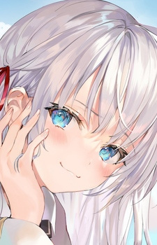

Tokidoki Bosotto Russia-go de Dereru Tonari no Alya-san Episode 7 Subtitle Indonesia
Posted by Anonymous
Detail Anime Tokidoki Bosotto Russia-go de Dereru Tonari no Alya-san
- Judul Anime: Tokidoki Bosotto Russia-go de Dereru Tonari no Alya-san
- Judul Alternatif: Alya Sometimes Hides Her Feelings in Russian
- Jumlah Episode: 12
- Status: FinisSummer 2024hed Airing
- Musim Rilis: Summer 2024
- Studio: Doga Kobo
- Genre: Comedy, Romance
- Durasi Episode: 24 menit
- Rating MyAnimeList: 7.64
- Official Site
Informasi Anime Tokidoki Bosotto Russia-go de Dereru Tonari no Alya-san
Sinopsis Anime Tokidoki Bosotto Russia-go de Dereru Tonari no Alya-san
Seirei Academy is a prestigious school attended by the very best students in Japan. Alisa Mikhailovna "Alya" Kujou, the half-Russian and half-Japanese treasurer of the school's student council, is known for her intelligence, stunning looks, and rigid personality. Contrasting her near-flawless persona, Alya's unmotivated classmate Masachika Kuze slacks off during lessons and seems to show no interest in her.
Initially irritated, Alya gradually becomes more intrigued by Masachika and starts expressing her affection for him in Russian. However, she is oblivious to his secret—he understands the language fluently! Due to a childhood friend who was temporarily staying in Japan, Masachika has been studying Russian in hopes of reuniting with her.
As the two spend more time together, the playful and eccentric relationship between them quickly deepens. In the meantime, both must learn to navigate their new growing feelings for one another.
[Written by MAL Rewrite]
Karakter Anime Tokidoki Bosotto Russia-go de Dereru Tonari no Alya-san
| Foto | Nama | Voice Actors |
|---|---|---|
|  | Kujou, Alisa Mikhailovna | Uesaka, Sumire |
 |
Kuze, Masachika | Amasaki, Kouhei |
| Kujou, Maria Mikhailovna | Fujii, Yukiyo | |
 |
Suou, Yuki | Maruoka, Wakana |
Tinggalkan Kometar